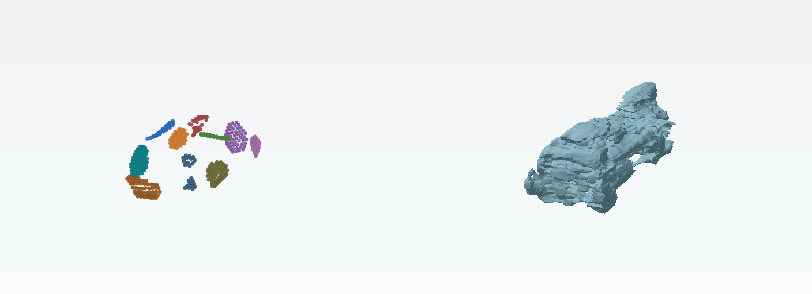
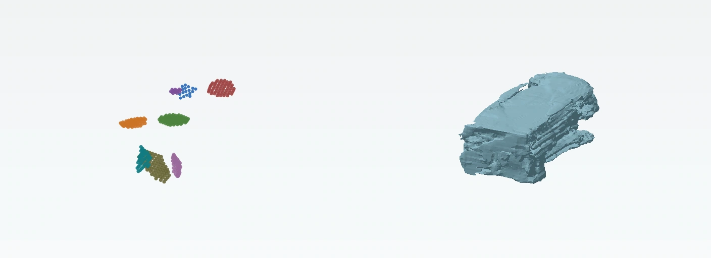
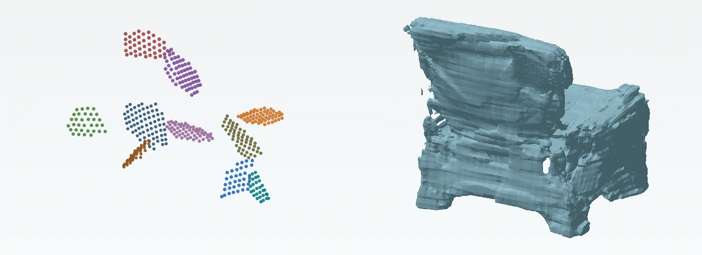
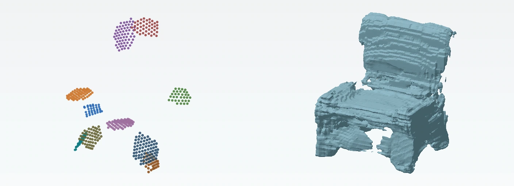
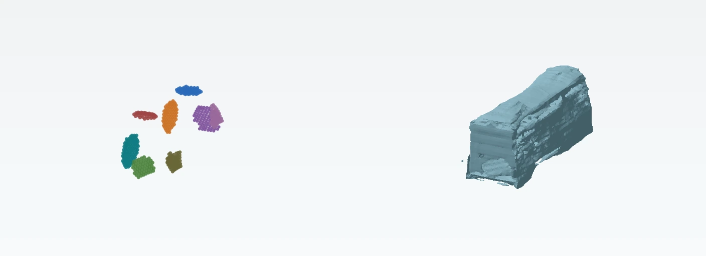

Capture 01
10 touches · 517 points

Reverse view

Four laboratory captures · Original marker points · B850
10 touches · 517 points

8 touches · 376 points


10 touches · 476 points


8 touches · 525 points

